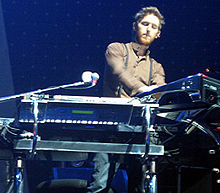
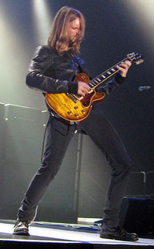
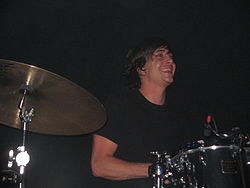
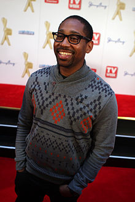
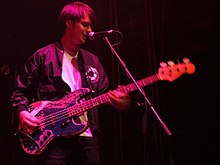

.jpg)
Adam Levine-Adam Noah Levine (/ləˈviːn/; born March 18, 1979) is an American singer, songwriter, record producer, and actor who is best known as the lead vocalist of the pop rock band Maroon 5. Levine began his musical career in 1994 with the band Kara's Flowers, of which he was the lead vocalist and guitarist. The band split up in 1997 after the commercial failure of their only album, The Fourth World. In 2001, the group was reformed as Maroon 5 – with James Valentine replacing Levine as guitarist- and released their first album, Songs About Jane, which went multi-platinum in the US. Since then, they have released five more albums: It Won't Be Soon Before Long (2007), Hands All Over (2010), Overexposed (2012), V (pronounced: "five") (2014), and Red Pill Blues (2017). As part of Maroon 5, Levine has received three Grammy Awards, three American Music Awards, an MTV Video Music Award, and a World Music Award.

Carmichael was born to a Jewish family in Boulder, Colorado, United States.[1] His father, Bob Carmichael, is a photographer, who also takes pictures during Maroon 5's tours. Jesse has a younger sister, Annie. He first started playing the guitar in junior high, rather than the keyboards (for which he is known in the band Maroon 5). Some time later, Carmichael, along with Adam Levine, Mickey Madden and Ryan Dusick, started a band called Kara's Flowers and signed a recording contract with Reprise Records. In 1997, they released their debut (and only) album, The Fourth World. The album found little success and, after the demise of the group, Carmichael and Levine attended Five Towns College. While in college, Carmichael began to play the keyboards.[1] However, two years later, Levine and Carmichael dropped out and headed back to California.[1] The members of Kara's Flowers, along with guitarist James Valentine, went on to form Maroon 5 in 2001. On March 9, 2012, Carmichael was announced to take a break from playing in Maroon 5, for an undetermined amount of time to focus more on his studies of "music and the healing arts" (spiritual healing).[2] However, on October 10, 2012, he confirmed that he would be returning to the band after they complete their Overexposed Tour. He rejoined in time for the band to record their fifth studio album V (2014). Carmichael joined with musician and producer Jason Lader, and formed a side project titled Circuit Jerks and released the extended play titled EP1 on September 9, 2016.[3]
Valentine was born in Lincoln, Nebraska. He was raised as a member of The Church of Jesus Christ of Latter-day Saints (LDS Church) and has three sisters and one brother. His mother is a former beauty queen, who was a school teacher before becoming a stay-at-home mom to raise her five children. His younger sister, Amanda Valentine has been a contestant on Project Runway two times starring in Season 11 and Season 13, as well as Project Runway All Stars once in Season 6. James is an Eagle Scout.[1] He was the president of his high school Lincoln Southeast High School's student council in Lincoln, Nebraska. He graduated from the University of Nebraska–Lincoln and attended Berklee College of Music. In addition to guitar, James is also a percussionist, playing in orchestra and jazz band in his youth.
Flynn was born in Woodstock, New York. When Flynn was 14 years old, he picked up his first pair of drumsticks in his father's basement and immediately started drumming the beat to "Jump" by Van Halen, impressing his father greatly. Later that year he came third in his high school talent show, behind stand up comedian Daniel Tosh and a dance crew known as "Tropic Lightning". Flynn graduated from Gunn High School and briefly attended San Diego State University.
P.J. Morton (born Paul Morton Jr.; March 29, 1981) is an American Grammy winning musician, singer, songwriter and record producer. Since 2012, he has been one of the keyboardists, alongside Jesse Carmichael, for the pop rock band Maroon 5. Morton originally joined the band as a touring member in 2010 and became an official member in 2012 after Carmichael went on indefinite hiatus (he returned to the lineup in 2014). Morton released his debut solo EP, Following My First Mind, in March 2012, through the record label Young Money. Adam Levine and James Valentine were featured on the lead single, "Heavy". In May 2013, Morton released his first major-label debut album, New Orleans. In 2016, he released his mixtape Bounce & Soul Vol. 1 in March and the Sticking to My Guns EP in July. On April 14, 2017, Morton released his first self-released studio album Gumbo, earning Morton two Grammy Award nominations for Best R&B Album and Best R&B Song at the 60th Annual Grammy Awards.[1] In April 2019, Morton said he would begin a project to restore the New Orleans home of jazz pioneer Buddy Bolden and create a museum and community space at the site.[2] Bolden's former home has been owned by Morton's father's church for more than a decade, and had been cited for demolition by neglect
Farrar was born in Los Angeles, California,[1] to Australian parents. His father, John Farrar, was a member of The Shadows and also carved a successful songwriting career, penning many of Olivia Newton-John's big hits as well as producing nearly every one of her albums during her most successful years. His mother, Pat Carroll, was a successful Australian pop singer in the 1960s. He attended The Buckley School. Sam is married to Stephanie Eitel, formerly a member of the band Agent Sparks.[8] Their daughter Vesper Pearl Farrar was born on August 6, 2009 and their son Flynn Roscoe Farrar was born on January 14, 2014.[9] He graduated Pitzer College.
